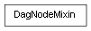

class cymel.core.cyobjects.dagnode_c.DagNodeMixin¶

- class cymel.core.cyobjects.dagnode_c.DagNodeMixin¶
Bases:
objectCore functionality supported by the
DagNodeclass.Methods:
allRoots()Get a list of all root nodes that have this node instance under them.
boundingBox([ws])Get the bounding box.
child(idx[, shapes, intermediates])Get one child node by index specification.
children([shapes, intermediates])Get list of child nodes on DAG path.
fullPath()Get the full pathname.
getJOQ([ws])Get the quaternion up to jointOrient of the node.
getM([ws, p, inv])Alternative name for
getMatrix.getMatrix([ws, p, inv])Obtain the transformation matrix of the node.
getQ([ws, ra, r, jo])Alias for
getQuaternion.getQuaternion([ws, ra, r, jo])Get the rotation quaternion of the node.
getS([ws])Alternative name for
getScaling.getScaling([ws])Get the node's scaling value.
getSh([ws])Alternative name for
getShearing.getShearing([ws])Get the shear value of the node.
getT([ws, at])Alternative name for
getTranslation.getTransformation([ws])Get transformation information for a node.
getTranslation([ws, at])Get the position of the node.
getX([ws])Alias for
getTransformation.Whether the shape has underworld nodes (curves on surfaces, etc.).
Is it underworld (curve-on-surface, etc.)?
instance(idx)Get instance from instance number.
Get the instance number.
instances([noSelf])Returns a list of instances.
isAncestorOf(node[, exact, underWorld])Checks whether the specified node is an upper node.
Is it instantiable?
isInstanced([indirect])Whether it is instantiated.
Is it an intermediate object?
isParentOf(node[, exact, underWorld])Checks whether the specified node is a parent.
isRoot()Is it a root node?
Templated or not.
Gain visibility.
leaves()Get a list of leaf nodes below the hierarchy.
Obtain the number of nodes that make up the DAG path and a pair of sibling index lists.
numChildren([shapes, intermediates])Get the number of child nodes on the DAG path.
numInstances([indirect])Get the number of instances.
numParents([indirect])Get the number of parent nodes that have this node instance as a child.
numShapes([intermediates])Gets the set object color.
parent([step])Get the parent node along the DAG path.
Returns the parent spatial shape in the underworld (curve-on-surface, etc.).
parents([indirect])Get a list of parent nodes that have this node instance as a child.
Get partial path name.
Get the length of the DAG full path.
root()Get the root node along the DAG path.
shape([idx, intermediates])Get the shape node.
shapes([intermediates])Get the index in siblings.
Get the sibling index list of all nodes in the DAG path.
siblings()Returns a list of sibling nodes other than itself.
Get the transform node.
Get a list of underworld nodes (curves-on-surface, etc.) under a shape.
Whether object colors are set to be used.
Method Details:
- allRoots()¶
Get a list of all root nodes that have this node instance under them.
If itself is the root node, the same reference will be returned.
- Return type:
- boundingBox(ws=False)¶
Get the bounding box.
- Parameters:
ws (bool) – Whether you get it in world space or not.
- Return type:
- child(idx, shapes=False, intermediates=False)¶
Get one child node by index specification.
Since it is not possible to obtain underworld nodes (curve-on-surface, etc.) from a shape, use
underWorldNodesin that case.- Parameters:
idx (int) – index. Depending on the shapes and intermediates options, you may get different results for the same index. If an invalid index is specified, None will be returned instead of an error.
shapes (bool) – Whether to include shapes as well.
intermediates (bool) – When shapes=True, whether to also include intermediate objects.
- Return type:
DagNodeor None
- children(shapes=False, intermediates=False)¶
Get list of child nodes on DAG path.
Since it is not possible to obtain underworld nodes (curve-on-surface, etc.) from a shape, use
underWorldNodesin that case.
- getJOQ(ws=False)¶
Get the quaternion up to jointOrient of the node.
Same as r=False specification of
getQuaternion.- Parameters:
ws (bool) – Whether you get it in world space or not.
- Return type:
- getMatrix(ws=False, p=False, inv=False)¶
Obtain the transformation matrix of the node.
- getQ(ws=False, ra=False, r=True, jo=True)¶
Alias for
getQuaternion.
- getQuaternion(ws=False, ra=False, r=True, jo=True)¶
Get the rotation quaternion of the node.
By default, the rotation does not include rotateAxis, so it does not match the decomposition result from the matrix, but it matches the criteria for the rotation direction of the node by Maya’s functions (Local Axis display and constraints).
If ws=False, the result will be composited from only the three rotation attributes, and the local matrix of the joint node will ignore any inverseScale effects.
- Parameters:
- Return type:
Note
The effects of non-uniform scale and shear up to the parent when ws=True and jointOrient when ws=False are not considered by the xform command or MTransformationMatrix, but are taken into account by this method.
The result of ws=True always matches the Local Axis display in Legacy Viewport, but it may not match the result of orientConstraint or parentConstraint if the upper hierarchy includes non-uniform scale or shear. This is because there is not enough consideration on the constraint side. However, if non-uniform scale is always canceled in segmentScaleCompensate, they will match.
The result of ws=False is that if there is no non-uniform scale or shear in the upper layer, or if non-uniform scale is always canceled by segmentScaleCompensate, the result of multiplying by the parent’s getQ(ws=True, ra=True) will match getQ(ws=True).
Warning
Combinations of the following options will result in an error.
ws=False, ra=True, r=False, jo=True
ws=True, ra=True, r=False
ws=True, ra=True, jo=False
ws=True, r=True, jo=False
- getS(ws=False)¶
Alternative name for
getScaling.
- getScaling(ws=False)¶
Get the node’s scaling value.
If ws=False, it is simply derived from the scale attribute, ignoring any inverseScale effects contained in the joint node’s local matrix.
- getSh(ws=False)¶
Alternative name for
getShearing.
- getShearing(ws=False)¶
Get the shear value of the node.
If ws=False, it is simply derived from the shear attribute, ignoring any inverseScale effects contained in the joint node’s local matrix.
- getT(ws=False, at=2)¶
Alternative name for
getTranslation.
- getTransformation(ws=False)¶
Get transformation information for a node.
transform Same as getting the value of the attribute
xmon the derived node, but with the option of getting the world space value.- Parameters:
ws (bool) – Whether you get it in world space or not.
- Return type:
- getTranslation(ws=False, at=2)¶
Get the position of the node.
By default, it is the rotation pivot position, which does not match the decomposition result from the matrix, but matches the reference for the node position by Maya’s functions (Local Axis display position and constraints).
- Parameters:
ws (bool) – Whether you get it in world space or not.
at (int) – Which attribute to get the corresponding position. - If 0, local origin (parent matrix position). - If it is 1, it is the position of translate. - If 2, rotatePivot position. - 3 is the scalePivot position. - If it is 4 or more, it is the matrix position.
- Return type:
- getX(ws=False)¶
Alias for
getTransformation.
- hasUnderWorldNodes()¶
Whether the shape has underworld nodes (curves on surfaces, etc.).
- Return type:
- instance(idx)¶
Get instance from instance number.
- instanceIndex()¶
Get the instance number.
- Return type:
Note
This number changes dynamically as the sort order changes or the number of instances increases or decreases. Also, the index of the world space plug used will change accordingly.
- instances(noSelf=False)¶
Returns a list of instances.
- isAncestorOf(node, exact=False, underWorld=True)¶
Checks whether the specified node is an upper node.
isParentOfcan be used to check whether a parent is a direct parent.
- isInstanced(indirect=True)¶
Whether it is instantiated.
- isParentOf(node, exact=False, underWorld=True)¶
Checks whether the specified node is a parent.
isAncestorOfcan be used to check whether a node is a higher-level node that is not limited to a direct parent.
- leaves()¶
Get a list of leaf nodes below the hierarchy.
Descending to underworld nodes (curve-on-surface, etc.) is not allowed.
- Return type:
- lengthAndSiblingIndices()¶
Obtain the number of nodes that make up the DAG path and a pair of sibling index lists.
- Return type:
(int,
list)
Note
When used as a key function to sort the node list, it becomes a breadth-first sort of the DAG hierarchy.
If you do not need sibling order guarantee, use
pathLength, and if depth is priority, usesiblingIndices.
- numChildren(shapes=False, intermediates=False)¶
Get the number of child nodes on the DAG path.
- numInstances(indirect=True)¶
Get the number of instances.
- numParents(indirect=False)¶
Get the number of parent nodes that have this node instance as a child.
- numShapes(intermediates=False)¶
- parent(step=1)¶
Get the parent node along the DAG path.
Parent shapes can also be obtained from underworld nodes (such as curve-on-surface).
- parentWorld()¶
Returns the parent spatial shape in the underworld (curve-on-surface, etc.).
This method allows you to obtain the parent surface shape from a curve-on-surface.
- Return type:
Shapeor None
- parents(indirect=False)¶
Get a list of parent nodes that have this node instance as a child.
- pathLength()¶
Get the length of the DAG full path.
This differs from the API’s MDagPath length() because the ``world’’ nodes that exist between the curve-on-surface and the parent shape and are not visible on the scene are not counted.
- Return type:
Note
If you use a node list as a key function to sort, it will be a breadth-first sort that does not guarantee the sibling order of the DAG hierarchy.
If you want to guarantee sibling order, use
lengthAndSiblingIndices, and if you want depth priority, usesiblingIndices.
- root()¶
Get the root node along the DAG path.
If itself is the root node, the same reference will be returned.
Unlike the MDagPath dagRoot() API, you get the root node on the scene rather than the invisible ``world’’ node.
- Return type:
Transformor None
- shape(idx=0, intermediates=False)¶
Get the shape node.
If self is a shape, you will get self, and if transform, you will get that shape.
- Parameters:
idx (int) – Index of the shape you want to get. Ignored if itself is a shape. The intermediates option can change what you get for the same index. If an invalid index is specified, None will be returned instead of an error. Python-like negative indexes can also be specified.
intermediates (bool) – Whether to also include intermediate objects.
- Return type:
Shapeor None
- shapes(intermediates=False)¶
- siblingIndices()¶
Get the sibling index list of all nodes in the DAG path.
- Return type:
Note
When used as a key function to sort the node list, it becomes a depth-first sort of the DAG hierarchy.
For width-first, use
lengthAndSiblingIndices; for breadth-first, which does not guarantee sibling order, usepathLength.
- underWorldNodes()¶
Get a list of underworld nodes (curves-on-surface, etc.) under a shape.
- Return type: